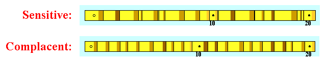
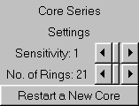

 |
"Sensitive" tree growth:
|
 |
"Complacent" tree growth:
|
| When you try skeleton plotting for yourself: | |
|---|---|
Change the sensitivity of your virtual core with scroll bars, as on the right:
|
 |
Previous Page |
Next Page
Introduction |
Dendrochronology Applications |
Crossdating Application |
Ring-Growth Anomalies
Sensitivity-Complacency |
Skeleton Plotting |
Relative Scale |
Master Chronology
Pattern Matching |
Finding the Dates |
Absent/False Rings |
Try Skeleton Plotting for Yourself!
Laboratory of Tree-Ring Research